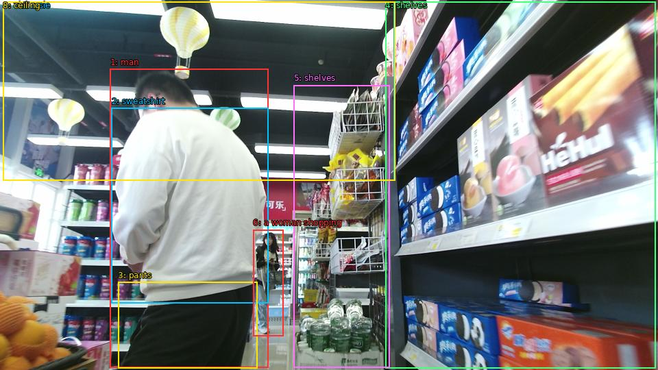

The image shows a man standing in a supermarket aisle. He is wearing a white sweatshirt and black pants and appears to be looking at the items on the shelves. On the right side of the image, there are shelves stocked with various types of food and drinks. In the background, there is a woman shopping in the aisle. The aisle is decorated with colorful paper lanterns hanging from the ceiling.

Original · Caption raw · Grounding raw · Koordinate
Številke so lokalni ID regije. Dolge slikovne oznake so skrajšane; spodaj so celotne fraze. Napovedane regije se lahko prekrivajo ali opisujejo skupine.
| ID | Celotna fraza | bbox xyxy |
|---|---|---|
| 1 | man | [160.8000030517578, 100.71000671386719, 391.1999816894531, 536.4900512695312] |
| 2 | sweatshirt | [162.72000122070312, 157.95001220703125, 391.1999816894531, 442.530029296875] |
| 3 | pants | [172.3199920654297, 411.7500305175781, 375.8399963378906, 537.5700073242188] |
| 4 | shelves | [562.0800170898438, 2.9700000286102295, 956.6399536132812, 537.030029296875] |
| 5 | shelves | [428.6399841308594, 124.47000122070312, 568.7999877929688, 536.4900512695312] |
| 6 | a woman shopping | [369.1199951171875, 335.07000732421875, 413.2799987792969, 490.59002685546875] |
| 7 | The aisle | [4.319999694824219, 2.430000066757202, 575.5199584960938, 263.25] |
| 8 | ceiling | [4.319999694824219, 2.430000066757202, 576.47998046875, 263.25] |